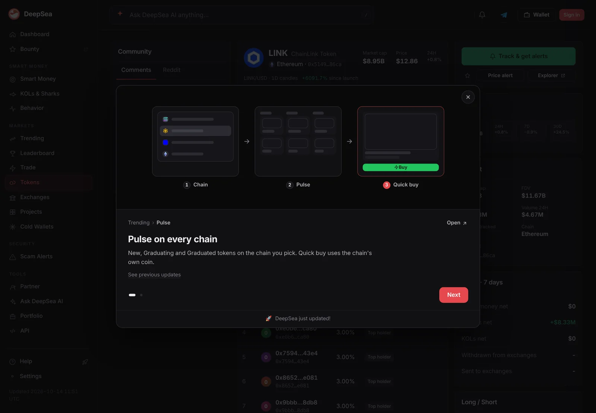

What is Chainlink? How DeFi gets its prices, plus CCIP and LINK staking
Smart contracts cannot see the outside world, so lending apps rely on oracles like Chainlink to tell them what ether is worth. Chainlink also moves tokens between chains through CCIP, and LINK pays and backs the node operators who do the work.
Key points
- Chainlink is an oracle network: independent node operators pull outside data, such as prices, combine it and post it onchain for smart contracts.
- CCIP sends messages, tokens or both between blockchains. A message needs at least 9 of 16 signed attestations to be verified.
- LINK has a fixed supply of 1 billion. Staking v0.2 launched in November 2023 with a 45 million LINK cap, and only node operators can be slashed.
 What DeepSea's data shows
What DeepSea's data shows
Large LINK holders were adding. DeepSea's LINK page showed wallets it labels as whales were net buyers of $4.73 million of LINK over the seven days to November 2, while its smart money wallets showed no net change.
The same page put LINK's market cap at $8.54 billion against a fully diluted value of $14.05 billion, a reminder that a large share of the supply is not yet circulating. Leveraged traders tracked by DeepSea held $22.50 million of LINK longs against $1.43 million of shorts.

Data: DeepSea (desea.io), checked November 2, 2026, 12:59 p.m. ET.
What is Chainlink?
Chainlink is a network of oracles. An oracle is a service that brings information from outside a blockchain, like the price of ether in dollars, into smart contracts that cannot fetch it themselves. A lending app needs that price to know when a loan is undercollateralized. Without a trusted feed, it would be blind.
Sergey Nazarov and Steve Ellis founded Chainlink in 2017, and Ari Juels helped write the whitepaper, published in September 2017, Chainlink's FAQ says. The network went live on mainnet in May 2019. Chainlink Labs is one of the teams developing it.
As of November 2, 2026, LINK traded at about $11.27, with a market cap of about $8.64 billion, ranking 16th on CoinGecko. About 766.85 million LINK was in circulation.
How do Chainlink oracles work?
A single data provider is a single point of failure. Chainlink's answer is the decentralized oracle network: a group of independent node operators that each pull data, after which the results are combined into one answer and posted onchain. Chainlink describes its feeds as "aggregated from many sources by decentralized oracle networks". A smart contract then reads the latest value in a single call.
Price feeds are the best known, used for collateral, lending and derivatives. The Data Feeds docs list other kinds too:
- SmartData feeds for real-world assets, covering reserves, net asset value and assets under management.
- Rate and volatility feeds, such as interest rate curves and staking yields.
- L2 sequencer uptime feeds, which tell apps on a layer 2 whether its sequencer is running.
- Tokenized equity feeds and Smart Value Recapture, which aims to recover value that bots capture around oracle updates.
Apps can check onchain, through a Flags Contract Registry, that a feed address is really owned and operated by Chainlink. That guards against look-alike feeds. Each feed page on data.chain.link shows its update rules: a deviation threshold (how far the price must move before an update) and a heartbeat (the longest time between updates).

What is Chainlink CCIP?
CCIP stands for Cross-Chain Interoperability Protocol. It gives apps one standard way to talk to many blockchains instead of building a separate bridge for each pair, the CCIP docs say. It does three things:
- Messages: send data to a contract on another chain to trigger an action there.
- Token transfers: token pools lock or burn tokens on the source chain and release or mint them on the destination.
- Programmable token transfers: send tokens and instructions together, for example to move collateral into a lending app on another chain.
A system that moves tokens between chains can hold a lot of value at once, so security is the selling point. CCIP says a message needs at least 9 of 16 signed attestations from independent oracle networks to be verified. Upgrades are timelocked, and node operators can veto them. Token issuers can also set rate limits that cap how much can flow in or out over time, which limits damage if something goes wrong. Issuers can set separate limits for fast transfers and standard ones.
Instead of every app writing its own bridge code, CCIP points to a public directory of supported networks, tokens and routes. Tokens already set up as Cross-Chain Tokens can work with default settings.
What is the LINK token used for?
LINK is how the network pays its workers. Developers and companies pay LINK for Chainlink services, and node operators receive LINK for running them, per Chainlink's FAQ. Node operators and community members can also stake LINK to back the performance of oracle services, and LINK funds rewards to start up new oracle networks.
The supply is capped at 1 billion tokens. LINK was first issued on Ethereum as an ERC-677 token, an extension of the ERC-20 standard, and it now moves across many chains, with CCIP securing those transfers.

How does Chainlink staking work?
Staking adds a financial penalty for bad service. The current version, v0.2, launched in November 2023 with a total cap of 45 million LINK, Chainlink's staking page says. Most of it is set aside for community stakers, who can stake from 1 to 15,000 LINK per address when space is open. Node operators can stake 1,000 to 75,000 LINK.
At launch, staking backed one service: the ETH/USD price feed on Ethereum. If that feed goes more than three hours without a valid update, anyone can raise an alert. Each node operator serving the feed then loses 700 LINK, and the account that raised a valid alert receives 7,000 LINK. Node operators get a 20-minute head start to alert first. Community stakers cannot be slashed in v0.2.
Rewards are paid in LINK and vary. At launch the base rate was 4.5% a year, or 4.32% for community stakers after a 4% share passed to node operators. The first version, v0.1, stopped paying rewards on November 28, 2023. The v0.2 contracts went through several audits, including a Code4rena competitive audit. Live pool figures are on staking.chain.link.
Chainlink Staking v0.2 cap at launch
million LINK
Source: Chainlink, Staking (v0.2 launch parameters, November 2023)
What are the risks?
- Bad data: an app that trusts a feed inherits its mistakes. A stale or wrong price can trigger unfair liquidations.
- Integration errors: apps must check update times and, on layer 2s, sequencer status. Chainlink's docs note some feeds are scheduled for deprecation.
- Cross-chain risk: CCIP adds verification and rate limits, but any system that moves tokens between chains is a large target.
- Narrow slashing: v0.2 penalties cover one feed and one failure, long downtime, not every kind of fault.
- Token risk: LINK's price moves with the market. Big wallets do trade it, as DeepSea's whale data showed in late October.
LC Insight analysis
This section is our reading of the facts above, not a statement of fact.
- We think Chainlink's real product is trust in data, not the token. Apps holding billions depend on feeds updating on time, which is why oracle failures rank among the most damaging in DeFi.
- CCIP is Chainlink's bet that moving tokens between chains needs the same many-operator design as its feeds. The 9 of 16 rule and rate limits are its answer to bridge hacks, and every new chain widens what it has to defend.
- Staking is still narrow. One feed and one failure mode is a start; the step to watch is whether slashing extends to more services.
What's next
- Any extension of staking and slashing beyond the ETH/USD feed
- New chains and token issuers adopting CCIP
- Feed deprecations listed in Chainlink's docs
Frequently asked questions
Is Chainlink a blockchain?
No. Chainlink is an oracle network that works with many blockchains, posting data and passing messages to them.
What is the maximum supply of LINK?
LINK's total supply is capped at 1 billion tokens, per Chainlink.
Can community stakers lose LINK in Chainlink staking?
Not in v0.2. Only node operator stakers can be slashed, at 700 LINK each when a valid downtime alert is raised on the ETH/USD feed.
What does CCIP stand for?
Cross-Chain Interoperability Protocol. It sends messages, tokens or both between blockchains.
Disclaimer. This article is based on public information and the sources listed below as of the update time shown. It is for information only and is not investment, legal or tax advice. Figures may change as companies and authorities publish new data.